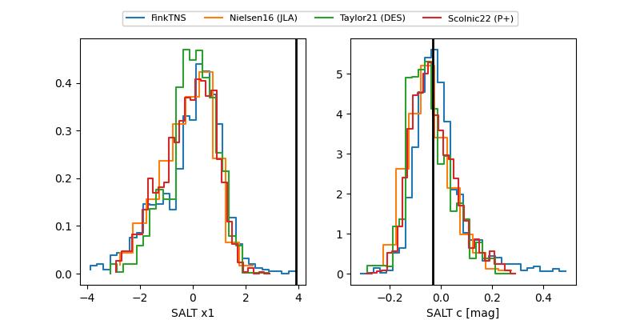

FINK: ZTF25abmxxyw
Lasair: ZTF25abmxxyw
ALeRCE: ZTF25abmxxyw
ZTF25abmxxyw (ztf,fink)
equatorial (ra, dec) = (33.0691,-16.03857)
galactic (l, b) = (186.4552,-68.22814)

last ztfg=20.07, ztfr=20.10
2 ztfg, 5 ztfr detections